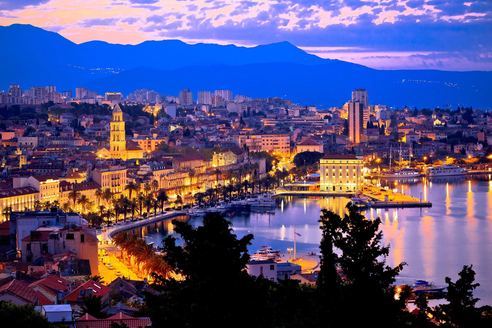
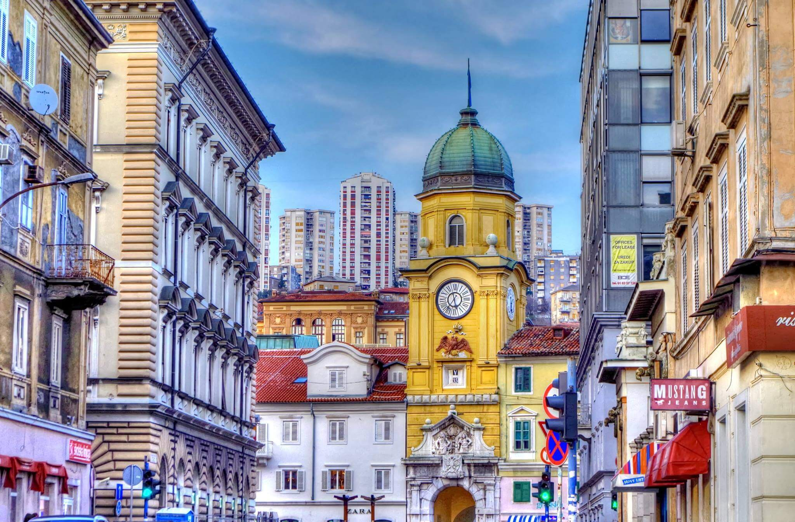
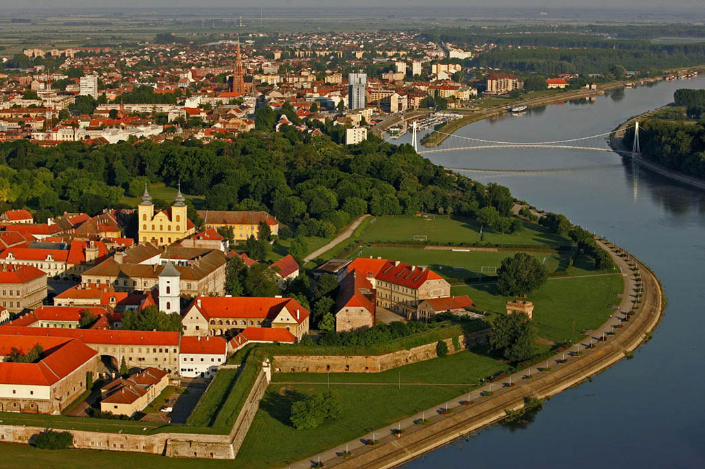
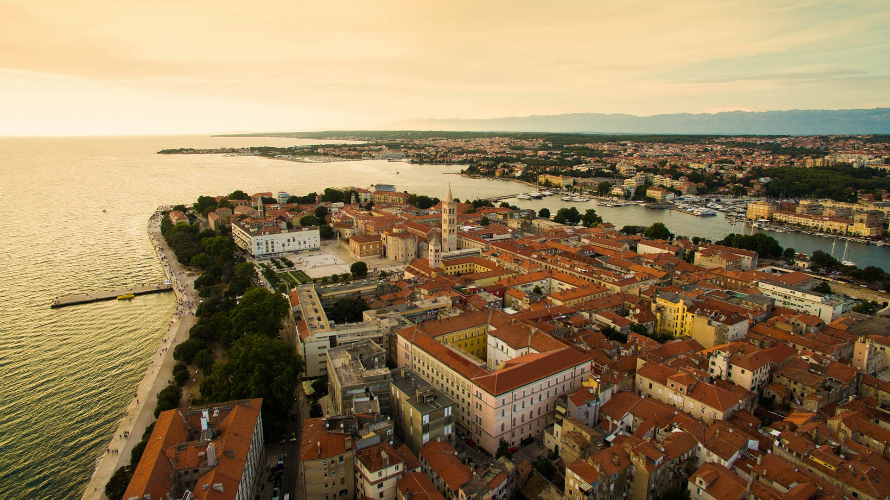

Croatia covers an area of 21,851 square miles and is the 127th largest country in the world. Major rivers like Sava, Danube, and the Kupa traverse the hilly northern parts and the flat southeastern plains of Croatia. The central and southern regions contain low mountains and forested highlands. Most of the country includes karst topography, particularly in the Dinaric Alps. Croatia is highly-urbanized with many cities and towns, Zagreb city being the largest and the seat of the Republic.
Zagreb is a city with a rich history dating from the Roman times to the present day. The oldest settlement located in the vicinity of the city was the Roman Andautonia, in today's Ščitarjevo. The name "Zagreb" is recorded in 1134, in reference to the foundation of the settlement at Kaptol in 1094. Zagreb became a free royal town in 1242. In 1851 Zagreb had its first mayor, Janko Kamauf.
Zagreb has special status as a Croatian administrative division and is a consolidated city-county (but separated from Zagreb County), and is administratively subdivided into 17 city districts. Most of them are at a low elevation along the river Sava valley, whereas northern and northeastern city districts, such as Podsljeme and Sesvete districts are situated in the foothills of the Medvednica mountain, making the city's geographical image rather diverse. The city extends over 30 kilometres (19 miles) east-west and around 20 kilometres (12 miles) north-south.
Zagreb is a city with a rich history dating from the Roman times to the present day. The oldest settlement located in the vicinity of the city was the Roman Andautonia, in today's Ščitarjevo. The name "Zagreb" is recorded in 1134, in reference to the foundation of the settlement at Kaptol in 1094. Zagreb became a free royal town in 1242. In 1851 Zagreb had its first mayor, Janko Kamauf.
Zagreb has special status as a Croatian administrative division and is a consolidated city-county (but separated from Zagreb County), and is administratively subdivided into 17 city districts. Most of them are at a low elevation along the river Sava valley, whereas northern and northeastern city districts, such as Podsljeme and Sesvete districts are situated in the foothills of the Medvednica mountain, making the city's geographical image rather diverse. The city extends over 30 kilometres (19 miles) east-west and around 20 kilometres (12 miles) north-south.
| City | County | Population |
|---|---|---|
| Zagreb | Zagreb | 802,588 |
| Split | Split-Dalmatia | 178,102 |
| Rijeka | Primorje-Gorski Kotar | 128,624 |
| Osijek | Osijek-Baranja | 108,048 |
| Zadar | Zadar County | 75,062 |
Zagreb
Zagreb is the biggest and the capital city of Croatia, located in the northwest of the country along Sava River. It lies at an altitude of approximately 400 ft above sea level and supports a population of 792,875. Its rich history dates back to the Roman period in 1094 AD when King Ladislaus returned from a campaign against Croatia and formed a diocese called Kaptol with a neighboring Gradec town. Ban Josip united the two settlements of Kaptol and Gradec in 1851. The city experiences an oceanic climate with four distinct seasons, summer, autumn, winter, and spring without a definite dry season. In winter the temperature drops to an average of 1 degree Celsius, and in summer it rises to up to 22 degrees Celsius. Winter months commonly experience snowballs and autumn months have rain and fog. Zagreb contains 17 city districts and 218 local committees for local governments. It is an international trade and business center with industries such as electricity production, textile, chemical and pharmaceutical, and food and drink. It has an integrated transport system of highways, roads, and bridges, and is the hub of 5 major Croatian highways, which usually started or ended in Zagreb. It has numerous museums that reflect the pre-civilization culture that existed in Zagreb, Croatia, and Europe at large including the archeological museums, gallery museum, and technical museums among others.
Zagreb
Split
The split city comes second among the major cities in Croatia and is the largest in Dalmatia region. Its territory includes the neighboring seaside towns making the city a favorite beach resort center both for the locals and international personalities. It is among the oldest cities in Croatia founded as a Greek colony of the Aspalathus in the 4th century. In 650 CE it became a Byzantine city then later conquered by Venice and became a Venetian city. It experiences humid subtropical and Mediterranean climates. Its summers are hot and moderately dry, and the winters are cold. Average annual rainfall is 820 mm and above. July experiences the hottest temperatures of up to 30 degrees Celsius. The city is one of the centers of Croatian culture and is listed by UNESCO as a world heritage site. There are 23 high schools, 24 primary schools and the University of Split, all located in the city.It is also a major transport center for Dalmatia region with a well-defined series of expressways and road networks for efficient and fast transportation in an out of the city. Venice eventually prevailed and during the early modern period Split remained a Venetian city, a heavily fortified outpost surrounded by Ottoman territory. Its hinterland was won from the Ottomans in the Morean War of 1699, and in 1797, as Venice fell to Napoleon, the Treaty of Campo Formio rendered the city to the Habsburg Monarchy. In 1805, the Peace of Pressburg added it to the Napoleonic Kingdom of Italy and in 1806 it was included in the French Empire, becoming part of the Illyrian Provinces in 1809.

Split
Rijeka
Rijeka is a major seaport of Croatia, located on the Kvarner bay. Its location as a seaport made it a much-contested city between Italians, Hungarians, and Croatians. It is a major marine center, with its leading economy depending on the shipbuilding and water transport. Most occupants are Croatians with negligible numbers of Bosniaks, Serbs, and Italians. Most people speak Croatian with a Venetian dialect called fiumano. It experiences a humid subtropical climate with warm, pleasant summers, very rare snow in winter, a temperature of 0-30 degrees Celsius and frequent rainfall. Major sights in the city include the torpedo factory, the sanctuary of our Lady of treat and the old gate.Rijeka is the main city and county seat of the Primorje-Gorski Kotar County. The city's economy largely depends on shipbuilding (shipyards "3. Maj" and "Viktor Lenac Shipyard") and maritime transport. Rijeka hosts the Croatian National Theatre Ivan pl. Zajc, first built in 1765, as well as the University of Rijeka, founded in 1973 but with roots dating back to 1632 School of Theology. Apart from Croatian and Italian, linguistically the city is home to its own unique dialect of the Venetian language, Fiuman, with an estimated 20,000 speakers among the autochthonous Italians, Croats and other minorities. Historically Fiuman served as the main lingua franca between the many ethnicities inhabiting the multiethnic port-town. In certain suburbs of the modern extended municipality the autochthonous population still speaks the Chakavian tongue, a dialect of the Croatian language.

Rijeka
Osijek
Hosting a population of 108,048, Osijek is the fourth largest city in Croatia. Major institutions include the Museum of Slovenia, creation national theater and the University of Osijek. Saponia chemical factory is the biggest factory in the area, and a major producer of detergents, cosmetics, and soap. Main transport links include the railway and highway, river port and an airport.The name was given to the city due to its position on elevated ground which prevented the city being flooded by the local swamp waters. Its name Osijek comes from the Croatian word "oseka" which means "ebb tide". Due to its history within the Habsburg Monarchy and briefly in the Ottoman Empire, as well as the presence of German and Hungarian minorities throughout its history, Osijek has (or had) its names in other languages, notably Hungarian: Eszék, German: Esseg or Essegg, Turkish: Ösek, Latin: Essek. It is also spelled Esgek. Its ancient name was Mursa and is supposed to come from the Proto-Indo-European word *móri (sea, marshland). The same root is perhaps seen in the toponyms "Marsonia" and "Mariniana". The origins of human habitation of Osijek dates back to Neolithic times, with the first known inhabitants belonging to the Illyrians and later invading Celtic tribes. After the conquest of Pannonia, Osijek, known at the time as Mursa, was under the administration and protection of the Roman 7th legion which maintained a military castrum at the colony and a bridge over the river Drava.

Osijek
Zadar
The Zadar city covers a total of 25 square kilometers and has a population of 75, 082. Most settlements in the city date back to the Neolithic period while others date back to the Stone Age period. Founded in the 4th Century by the Liburnians, Zadar experienced successive kingdom struggles until 1991 when Croatian army defended it from the hands of the Serbs. It is a major cultural center for Croatia, and in the 19th century, it was a center for the creation movement for cultural and national revival. Main sights of Zadar include the Roman Forum, the church of St Donatus, and St. Mary's church.The area of present-day Zadar traces its earliest evidence of human life from the late Stone Age, while numerous settlements date as early as the Neolithic. Before the Illyrians, an ancient Mediterranean people of a pre-Indo-European culture inhabited the area. Zadar traces its origin to its 9th-century BC founding as a settlement of the Illyrian tribe of Liburnians known as Iader

Zadar